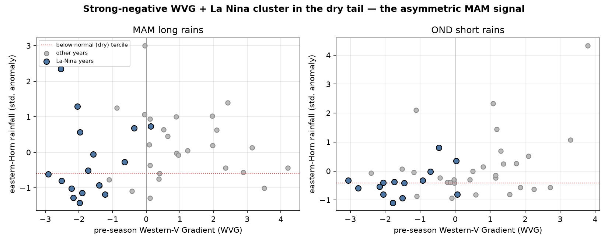

The eastern-Horn MAM long rains are asymmetrically predictable
A homogeneous domain and a dry-tail metric recover a signal that a whole-domain, symmetric search averages away
An expert review of a prior automated search flagged that its finding of "little seasonal-scale predictability" for the East African March–May long rains was a methodological artifact, not a property of the climate. This analysis tests that directly. Two corrections — restricting to the homogeneous eastern-Horn domain, and evaluating the predictor on the dry (below-normal) tail rather than symmetrically over all years — recover the operationally documented predictability.
1 · The two corrections
The prior search evaluated the Western-V Gradient (WVG) over whole-country boxes with a symmetric, all-years skill metric, and found near-no-skill for the MAM long rains. Two choices drove that:
- Domain. The country boxes included western Kenya / the Lake Victoria basin — a wetter, convectively-driven regime off the Walker subsidence branch, with no coherent large-scale SST teleconnection — and northern Somalia. Pooling skill across these heterogeneous regimes dilutes it. The correction restricts to the eastern-Horn (EEA) domain (east/south of ~38°E, ~8°N), on the descending branch of the Indian Ocean Walker cell, and to south-central Somalia specifically.
- Metric. The MAM–SST relationship is one-sided: dry seasons within/following La Niña carry a clear negative-WVG signature, while wet seasons do not. A symmetric metric (all-years correlation or ROC) therefore averages the signal toward zero. The correction evaluates the dry tail — below-normal discrimination and the La-Niña-conditional dry hit rate.
2 · The result
Area-mean rainfall, 1981–2023 (n = 43). WVG from pre-season SSTs (Jan–Feb for MAM). "Below-median" is SPI < 0, the operational framing; "strong −WVG" is the most-negative-WVG third of years; La Niña is flagged by pre-season Niño-3.4 < −0.5σ.
Columns: corr = symmetric all-years LOYO correlation; dry base = climatological below-median rate;
dry after strong -WVG = dry rate in the most-negative-WVG third of years; + La Nina = also a La Nina year.
| region | season | corr | dry base | dry after strong -WVG | dry, -WVG + La Nina |
|---|---|---|---|---|---|
| eastern Horn | MAM | −0.21 | 0.56 | 0.79 | 0.77 (n=13) |
| south-central Somalia | MAM | −0.17 | 0.56 | 0.79 | 0.77 (n=13) |
| eastern Horn | OND (control) | +0.26 | 0.70 | 0.86 | 1.00 (n=9) |

The symmetric all-years correlation for MAM is −0.21 — no linear skill, reproducing the prior search. But a strong-negative WVG raises the probability of a below-median MAM to 0.79, and to 0.77 when it coincides with La Niña, against a ~0.5 base rate. Those figures match the operational negative-WVG analog statistics reported by the Climate Hazards Center (≈75–80% of negative-WVG analog years below-normal). The signal is real, region-specific, and concentrated exactly in the dry, La-Niña seasons that matter for anticipatory action — the seasons a symmetric whole-domain metric averages away. (OND, the short rains, is a control; its WVG link is weaker because the Indian Ocean Dipole, not the WVG, is its primary driver.)
3 · The methodological point
The prior "MAM is unpredictable" reading was an artifact of two defensible-looking defaults — whole-domain pooling and a symmetric skill metric — that are wrong for an asymmetric, regionally localized teleconnection. This is a general limitation of naive automated forecast-design search: optimizing a symmetric score over an administratively-defined region will systematically miss predictability that is one-sided (dry-tail only) and confined to a physically homogeneous sub-region. Automated search is a starting point; it requires domain-guided regionalization (here, the eHorn Walker-subsidence domain) and conditional, tail-focused evaluation to avoid discarding real, operationally critical signal. That is the corrected finding: not that the long rains are unpredictable, but that recovering their predictability requires the domain knowledge the operational centers encode.
4 · Caveats
- The WVG here is an approximation of the operational index (box definitions and standardization differ), so these are indicative recoveries, not a reproduction of the operational skill; the centers' forecast skill — using their exact index and its NMME forecast — is higher.
- Small conditional samples (13 strong-negative-WVG La-Niña MAM years in 43): the conditional probabilities carry wide intervals and should be read as consistent-with-operational, not precise.
- Perfect-prognosis predictor. This uses the observed pre-season WVG; an operational forecast additionally requires the NMME forecast of the WVG, which adds its own (documented, high) skill.
- This corrects the long-rains claim only; the domain and asymmetric-evaluation lessons apply to any automated seasonal-forecast search.